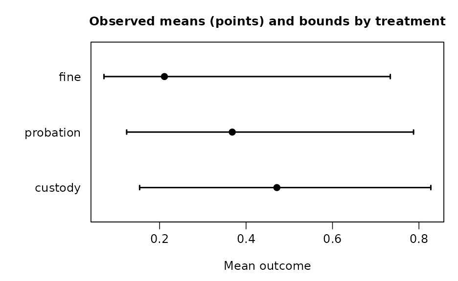
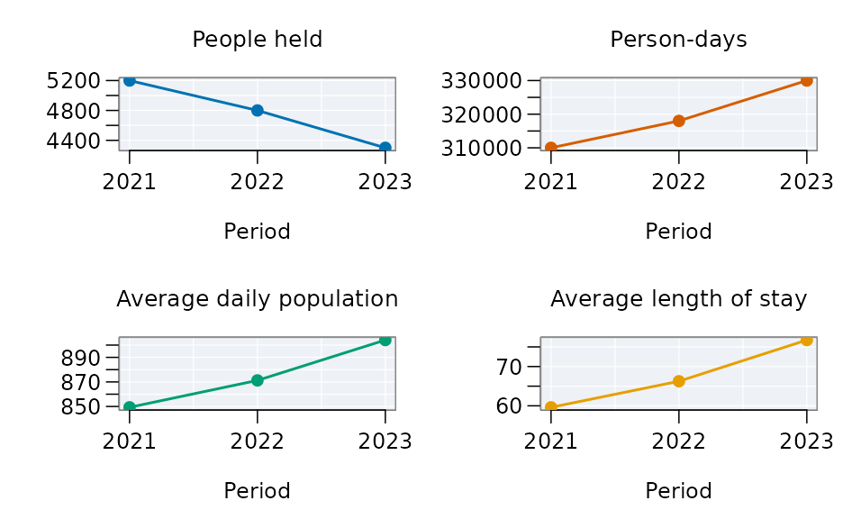
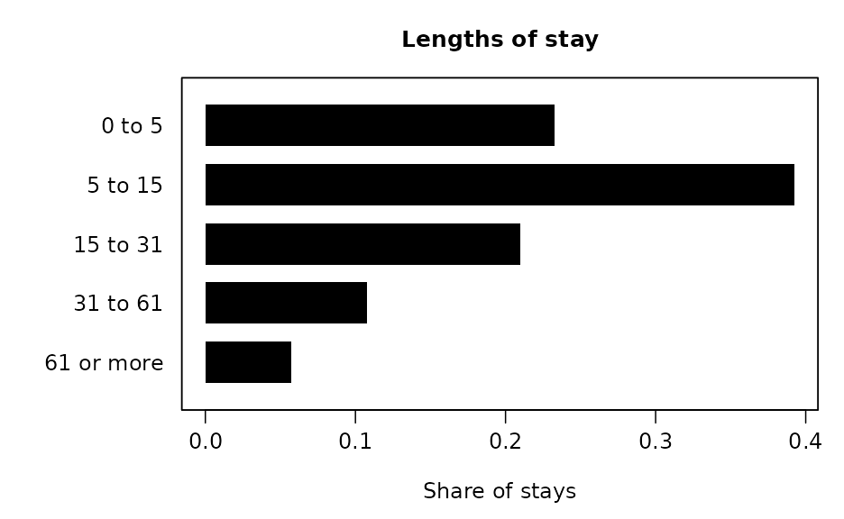
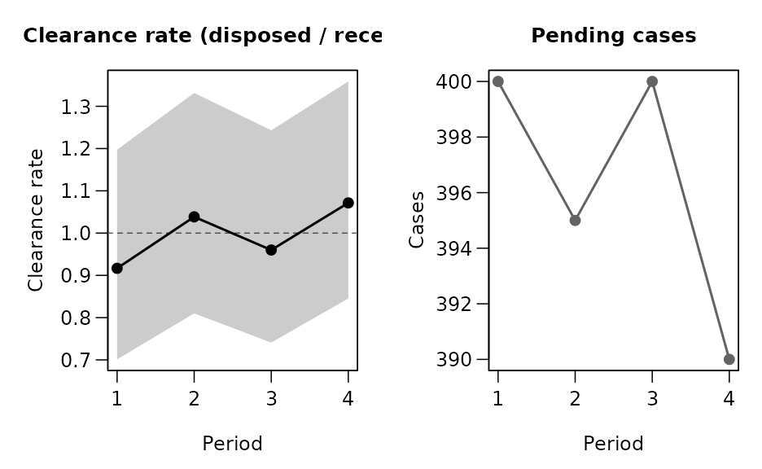
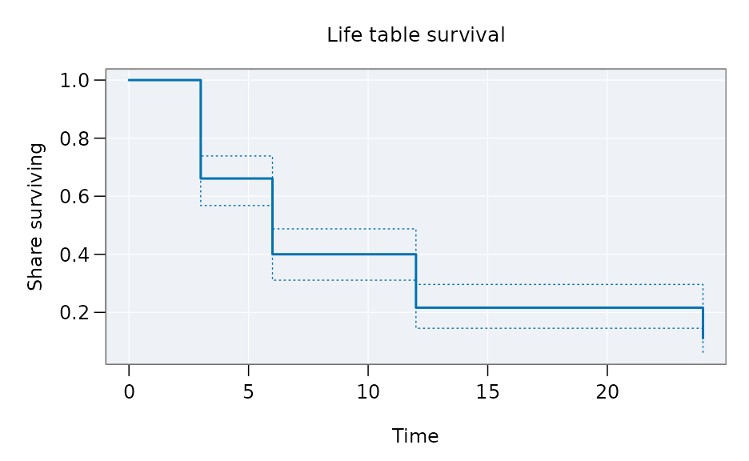

Corrections, custody and court flow
Source:vignettes/corrections-and-custody.Rmd
corrections-and-custody.RmdIncapacitation, bounds on sentence effects, stock and flow in custody and court backlogs, and segregation against the Mandela Rules.
Each section is one help page: what the function is for, the example
of its help page as it runs, and the plot of its result where the
package draws one. ?name gives the arguments and the value
in full.
Corrections
Incapacitation: crime rate, share prevented and the marginal year
incap(): An offender commits crimes at rate
lam a year while free, and each crime leads to a custodial
sentence of s years with probability q. Over a
career the crime rate is lam / (1 + lam q s): the share of offending
prevented, lam q s / (1 + lam q s), never reaches 1, longer or surer
sentences lower the rate, and one more year of sentence prevents lam^2 q
/ ((1 + lam q s) (1 + lam q (s + 1))) crimes a year, less for each year
added. A sentence uniform across offenders prevents a larger share of
the offending of those with the higher rate. The model holds the rate
fixed over the career and replaces nobody; see incapr() for
both. See proof("incap").
Incapacitation under desistance and replacement
incapr(): Crimes prevented by a sentence of
s periods served from career age t0, when the
offending rate falls with career age and a share r of the
crimes prevented is committed by someone else instead. The count is at
most s times the rate at the start of the sentence and at
least s times the rate at its end; the same sentence served
one period later prevents no more; and, net of replacement, the estimate
from the rate at the start is still an upper bound. The usual
constant-rate estimate therefore overstates what a sentence buys under
both assumptions. See proof("incapr").
Evaluating a release rule from the released alone
sellab(): Failures (a missed court date, a new arrest)
are seen only for the defendants a judge released. A proposed rule that
releases only people the judge released is scored exactly from their
outcomes; one that releases people the judge detained has a failure rate
known only up to the worst and best cases for them, an interval whose
width is the share of the rule’s releases the judge detained. Both ends
can occur. The naive score on the rule’s observed releases alone always
lies inside the interval, but reports one point of it as if it were
known. See proof("sellab").
Mean time in custody from completed and current stays
losbnd(): The mean length of stay of the people released
(or of the cases disposed) leaves out everyone still inside. Their
elapsed time is a lower bound on their stay, so the mean over everyone
admitted is at least lower, the mean of the completed stays
and the elapsed times together; the released-only mean falls short of it
by m / (n + m) times the excess of the mean elapsed time
over the released mean, and understates the truth for certain when that
excess is positive. No upper bound exists without a cap on how long the
current stays will last. See proof("losbnd").
Bounds on a sentence’s effect without assumptions
sntbnd(): Each person receives one of two sentences and
shows the outcome (say, reconviction) under that one only. With no
assumption about who receives which, the chance of the outcome under a
sentence is known only up to an interval whose width is the share who
received the other sentence, and the effect of one sentence against the
other lies in an interval of width exactly 1 that always contains 0:
observational data alone cannot even sign it. See
proof("sntbnd").
set.seed(1)
z <- sample(c("community", "custody"), 500, TRUE, c(0.6, 0.4))
y <- rbinom(500, 1, ifelse(z == "custody", 0.55, 0.35))
sntbnd(y, z, treat = "custody")
#> term share lower upper observed
#> 1 community 0.624 0.208 0.584 0.3333333
#> 2 custody 0.376 0.192 0.816 0.5106383
#> 3 effect NA -0.392 0.608 0.1773050Bounds on sentence effects under monotone response and selection
mtrbnd(): Asks what can be said about the effect of a
harsher sentence (a longer term, custody against probation) on an
outcome such as reconviction when who received which sentence was not
random. With no assumption the mean outcome everyone would have under
sentence t is known only to an interval (see
sntbnd() for two sentences). Manski and Pepper (2000)
narrow it with two assumptions about ordered treatments:
set.seed(13)
z <- factor(sample(c("fine", "probation", "custody"), 800, TRUE),
levels = c("fine", "probation", "custody"))
y <- rbinom(800, 1, c(0.2, 0.35, 0.5)[as.integer(z)])
mtrbnd(y, z, assume = "both")
#> mtrbnd: bounds under both
#> z share mean lower upper atelo atehi
#> fine 0.33750 0.2111111 0.2111111 0.3487500 NA NA
#> probation 0.33625 0.3680297 0.3150697 0.4017100 0 0.1905989
#> custody 0.32625 0.4712644 0.3487500 0.4712644 0 0.2601533
mtrbnd(y, z, assume = "none")
#> mtrbnd: bounds under none
#> z share mean lower upper atelo atehi
#> fine 0.33750 0.2111111 0.07125 0.73375 NA NA
#> probation 0.33625 0.3680297 0.12375 0.78750 -0.61 0.71625
#> custody 0.32625 0.4712644 0.15375 0.82750 -0.58 0.75625
Period-two hazards after selective depletion
hzdsel(): A share s of a cohort is at high
risk of reconviction, h a period, and the rest at low risk,
l. If a programme changes who survives the first period
without reconviction, the period-two hazard among the survivors is a
weighted average of h and l with weight the
share of high-risk survivors, and it rises with that share. An arm that
keeps more of its high-risk people out of reconviction in period one
therefore shows the higher period-two hazard even if it has no effect on
anyone in period two: a period-by-period hazard ratio is not a causal
contrast; a risk difference at a fixed follow-up is. See
proof("hzdsel").
Custody and court flow
Stock and flow of a population held over time
stkflw(): Person-days divided by the length of a period
give the average daily population (a stock: how many are held at once);
divided by the people admitted or released, the average length of stay
(how long each stays). The two share a numerator and
days = adp * t = people * alos (Little’s law in the words
of corrections planning; Lakner 1976), so any two of people, days,
average daily population and average length of stay give the rest,
except days with the average daily population, which carry the same
information. When the length of stay moves, the stock and the flow can
move in opposite directions; pshare is the share of the
change in days (on the log scale) that the change in people accounts
for, the rest coming from the length of stay. See
proof("stkflw").
stkflw(people = c(5200, 4800, 4300), days = c(310000, 318000, 330000),
prd = 2021:2023)
#> stkflw: stock and flow, changes against the first period
#> period t people days adp alos peochg aloschg dayschg adpchg
#> 2021 365 5200 310000 849.3151 59.61538 0.000000 0.00000 0.000000 0.000000
#> 2022 365 4800 318000 871.2329 66.25000 -7.692308 11.12903 2.580645 2.580645
#> 2023 365 4300 330000 904.1096 76.74419 -17.307692 28.73218 6.451613 6.451613
#> pshare
#> NA
#> -3.141506
#> -3.039708
# admissions implied by a population and a length of stay
stkflw(adp = 900, alos = 61)$flow$people
#> [1] 5385.246
res <- stkflw(people = c(5200, 4800, 4300), days = c(310000, 318000, 330000),
prd = 2021:2023)
plot(res)
Lengths of stay: their distribution and its fit
lostay(): The lengths of stay of a set of placements (or
of people): the mean with its t interval, the median and quartiles, the
longest; the share of stays in each band and at or below each threshold
(15 days, the Mandela Rules’ limit, say), with the share of each band
carrying a flag (no review on record); and the fit of lognormal,
exponential and Pareto laws by maximum likelihood, compared by AIC: a
heavy tail (Pareto or lognormal beating the exponential) separates a few
long stays from many short ones. A stay still open is a lower bound on
its length; see losbnd() for the mean it bounds.
set.seed(3)
s <- round(rlnorm(400, 2.3, 1.1)) + 1
r <- lostay(s, breaks = c(0, 5, 15, 31, 61, Inf), thr = 15)
r$bands
#> lo hi n share
#> 1 0 5 93 0.2325
#> 2 5 15 157 0.3925
#> 3 15 31 84 0.2100
#> 4 31 61 43 0.1075
#> 5 61 Inf 23 0.0575
r$fit
#> model aic best
#> 1 lognormal 3105.502 TRUE
#> 2 exponential 3228.711 FALSE
#> 3 pareto 3249.590 FALSE
plot(r)
Little’s law on a court docket
bklog(): From the arrival and disposition times of cases
(a disposition missing or after the horizon: still pending), the
time-average backlog equals the filing rate times the mean time to
disposition when every case has been disposed (Little 1961):
resid is that identity’s residual, 0 up to rounding. The
backlog counts each pending case to the horizon; the mean time is over
the disposed cases, which understates the truth when cases are pending
(see losbnd()). Given a target backlog, need
is the mean time to disposition that holds it at the present filing
rate. See proof("bklog").
Case flow through a court
dktflw(): Cases received and disposed by period: the
clearance rate (disposed over received, above 1 when the caseload
shrinks) with its exact interval, the net, the clearance over a rolling
window, and with the pending caseload its change and the periods it
would take to clear at the recent pace. With the length of each period
(span) the filing rate gives, by Little’s law, the mean
time to disposition the pending caseload implies, to set beside a
published mean (mtime): their ratio far from 1
means the published mean leaves out the long-pending cases. Published
duration bands (shares of cases in bands starting at
floors) bound the mean from below.
dktflw(recv = c(120, 130, 125, 140), disp = c(110, 135, 120, 150),
pend = c(400, 395, 400, 390), win = 2, span = 91)
#> dktflw: case flow
#> period recv disp clear lo hi net rclear rlo rhi pend
#> 1 120 110 0.9166667 0.7011985 1.197368 10 NA NA NA 400
#> 2 130 135 1.0384615 0.8101053 1.331593 -5 0.980000 0.8183090 1.173541 395
#> 3 125 120 0.9600000 0.7409969 1.243285 5 1.000000 0.8373357 1.194264 400
#> 4 140 150 1.0714286 0.8453024 1.358733 -10 1.018868 0.8568263 1.211642 390
#> pchg toclear frate impl
#> NA 3.636364 1.318681 303.3333
#> -5 3.224490 1.428571 276.5000
#> 5 3.137255 1.373626 291.2000
#> -10 2.888889 1.538462 253.5000
m <- matrix(c(50, 55, 60, 30, 28, 25, 20, 17, 15), 3,
dimnames = list(2021:2023, c("guilty", "withdrawn", "other")))
dktflw(mix = m)$mix$trend
#> outcome stat p holm change
#> 1 guilty 2.0202020 0.1552185 0.4656555 0.10
#> 2 withdrawn 0.6246183 0.4293363 0.7006036 -0.05
#> 3 other 0.8723635 0.3503018 0.7006036 -0.05
res <- dktflw(recv = c(120, 130, 125, 140), disp = c(110, 135, 120, 150),
pend = c(400, 395, 400, 390), win = 2, span = 91)
plot(res)
Actuarial life table of grouped times
lftab(): How long cases take, from the counts of cases
ending (and censored) in each band of time: the conditional probability
of ending in each band with the censored counted as half a case at risk,
the survival (the share still open at the end of each band) with
Greenwood’s standard error and a plain, log or log-log interval, the
hazard, and the median, linear within its band.
lftab(c(0, 3, 6, 12, 24, Inf), events = c(40, 30, 20, 10, 5),
cens = c(2, 2, 3, 3, 4))
#> lftab: life table, log-log intervals, median 4.851282
#> lower upper entering atrisk events cens q surv se lo
#> 0 3 119 118.0 40 2 0.3389831 0.66101695 0.04357669 0.568007817
#> 3 6 77 76.0 30 2 0.3947368 0.40008921 0.04548923 0.310878228
#> 6 12 45 43.5 20 3 0.4597701 0.21614015 0.03896034 0.145266720
#> 12 24 22 20.5 10 3 0.4878049 0.11070593 0.03110609 0.059213092
#> 24 Inf 9 7.0 5 4 0.7142857 0.03163027 0.02088777 0.006579202
#> hi hazard
#> 0.73860814 0.13605442
#> 0.48760071 0.16393443
#> 0.29631969 0.09950249
#> 0.18020436 0.05376344
#> 0.09308838 NA
res <- lftab(c(0, 3, 6, 12, 24, Inf), events = c(40, 30, 20, 10, 5),
cens = c(2, 2, 3, 3, 4))
plot(res)
Transition matrix between states
trnmat(): The moves of people between states (regions,
institutions, security levels) from their sequence of records: the
counts and probabilities of each move between consecutive records of the
same person, the stationary distribution of the chain (where the
population would settle if the probabilities held), the share of moves
that stay in their state, and the Theil index of the moves between
states (0 when they spread evenly over the pairs of states, higher when
a few pairs carry them).
r <- trnmat(c("N", "N", "E", "N", "W", "W", "E", "E"),
c(1, 1, 1, 2, 2, 2, 3, 3), time = c(1, 2, 3, 1, 2, 3, 1, 2))
r$prob
#> E N W
#> E 1.0000000 0.0000000 0.0000000
#> N 0.3333333 0.3333333 0.3333333
#> W 0.0000000 0.0000000 1.0000000
r$pi
#> E N W
#> NA NA NA
plot(r)
Segregation and the Mandela Rules
Segregation placements under the Mandela Rules
mndla(): The United Nations Standard Minimum Rules for
the Treatment of Prisoners (the Mandela Rules) define solitary
confinement as 22 hours or more a day without meaningful human contact
(Rule 44), and prolonged solitary confinement, which Rule 43 prohibits,
as more than 15 consecutive days of it. mndla() classifies
each placement and gives the share that meets the rules, overall and by
group (a year, a region), with three denominators that answer different
questions:
set.seed(6)
d <- data.frame(id = sample(1:80, 150, TRUE), yr = sample(2021:2022, 150,
TRUE), days = rgeom(150, 0.08) + 1)
mndla(d$days, d$id, d$yr)$tab
#> group den n k share lo hi
#> 1 2021 stays 78 26 0.3333333 0.2305852 0.4491667
#> 2 2021 people 49 22 0.4489796 0.3066538 0.5976946
#> 3 2021 cumul 49 25 0.5102041 0.3633783 0.6557526
#> 4 2022 stays 72 20 0.2777778 0.1786429 0.3959058
#> 5 2022 people 47 18 0.3829787 0.2450682 0.5362006
#> 6 2022 cumul 47 24 0.5106383 0.3606447 0.6592430
#> 7 all stays 150 46 0.3066667 0.2340520 0.3871003
#> 8 all people 68 38 0.5588235 0.4331781 0.6791799
#> 9 all cumul 68 43 0.6323529 0.5066791 0.7461021
# the rule of Rules 43 and 44 with hours out of cell
mndla(c(5, 20, 30), hours = c(1, 1.5, 3), miss = c(100, 100, 40))$tab
#> group den n k share lo hi sol tor
#> 1 all stays 3 2 0.6666667 0.09429932 0.9915962 1 1Was the review held, and in time?
rvwtim(): A stay in a restrictive unit is to be reviewed
by a set day. rvwtim() takes the length of each stay and
the day of its first review, and gives how many stays of each length
were never reviewed, how many of those past the day a review was due had
none, and how long the reviews that were held took. Sprott, Doob and
Iftene (2021, Tables 2 and 15) asked this of the reviews by Independent
External Decision Makers of stays in Canada’s Structured Intervention
Units; the question is the same for any review a rule sets a day for (a
bail review, a segregation review, a hearing).
days <- c(12, 40, 75, 90, 130, 150, 64, 20)
first <- c(NA, 31, 48, NA, 61, NA, 33, NA)
rvwtim(days, first, due = 60, cuts = c(60, 120))
#> $cov
#> group band n rev never share lo hi
#> 1 all up to 60 3 1 2 0.6666667 0.094299324 0.9915962
#> 2 all over 60 to 120 3 2 1 0.3333333 0.008403759 0.9057007
#> 3 all over 120 2 1 1 0.5000000 0.012579117 0.9874209
#>
#> $sum
#> group n rev past pastnever share lo hi late med
#> 1 all 8 4 5 2 0.4 0.05274495 0.8533672 1 40.5
#>
#> $due
#> [1] 60
#>
#> $level
#> [1] 0.95Days on which an entitlement was missed
entcmp(): The law may give a person held in a
restrictive unit something every day: hours out of the cell, time with
other people. entcmp() takes, for each stay, the percentage
of its days on which that was missed, and gives the stays by how often
it was missed, the share that missed it every day, and the share of all
days missed. With the hours received on the days it was missed, it shows
how far short those days fell; with the percentage of days the person
refused, how many stays missed more days than refusal accounts for.
These are the tables of Sprott and Doob (2021, Tables 6, 7, 14, 17 and
21) on the four hours out of cell and the two hours of human contact in
Canada’s Structured Intervention Units.
miss <- c(100, 100, 80, 45, 10, 0, 100, 60)
entcmp(miss, days = c(20, 35, 16, 40, 18, 5, 62, 30),
hours = c(0.4, 1.5, 2.2, 3, 3.5, NA, 0.8, 1),
ref = c(10, 100, 5, 0, 0, 0, 30, 60))
#> $tab
#> group band n share
#> 1 all 0 1 0.125
#> 2 all over 0 to 20 1 0.125
#> 3 all over 20 to 50 1 0.125
#> 4 all over 50 to under 100 2 0.250
#> 5 all 100 3 0.375
#>
#> $sum
#> group n none all share lo hi half dayshr
#> 1 all 8 1 3 0.375 0.08523341 0.7551368 5 0.7415929
#>
#> $hrs
#> band n share
#> 1 up to 0.5 1 0.1428571
#> 2 over 0.5 to 1 2 0.2857143
#> 3 over 1 to 2 1 0.1428571
#> 4 over 2 to 3 2 0.2857143
#> 5 over 3 1 0.1428571
#>
#> $ref
#> group n most net
#> 1 all 8 2 5
#>
#> $level
#> [1] 0.95Do decision makers decide alike?
dmvar(): When cases are shared among several decision
makers (reviewers, judges, panels), the share of their decisions that go
one way should differ by no more than chance if the cases are alike.
dmvar() gives each decision maker’s rate with its exact
interval and the share of all such decisions that are theirs, the
chi-square test that the rates are equal, the same test without the
decision makers who decided few cases, and the test with each decision
maker left out in turn, which shows whether one of them makes the
difference. Sprott, Doob and Iftene (2021, Tables 10 and 11) found the
share of reviews that kept a person in a Structured Intervention Unit to
run from 37.5% to over 75% across twelve decision makers, with and
without the one who had decided fewest.
dm <- rep(c("a", "b", "c", "d"), c(30, 28, 25, 4))
dec <- rep(c("remain", "remove", "remain", "remove", "remain", "remove",
"remain"), c(24, 6, 10, 18, 15, 10, 4))
dmvar(dec, dm, out = "remain")
#> $tab
#> dm n k rate lo hi share
#> 1 a 30 24 0.8000000 0.6143335 0.9228645 0.4528302
#> 2 b 28 10 0.3571429 0.1864067 0.5593497 0.1886792
#> 3 c 25 15 0.6000000 0.3866535 0.7887452 0.2830189
#> 4 d 4 4 1.0000000 0.3976354 1.0000000 0.0754717
#>
#> $test
#> set m stat df p low
#> 1 all 4 14.63426 3 0.002157435 2
#> 2 n >= nmin 3 11.75893 2 0.002796286 0
#>
#> $drop
#> dm stat df p
#> 1 a 7.270408 2 0.0263785505
#> 2 b 4.356395 2 0.1132454520
#> 3 c 14.672556 2 0.0006514707
#> 4 d 11.758926 2 0.0027962859
#>
#> $out
#> [1] "remain"
#>
#> $level
#> [1] 0.95